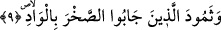

Ka‘b’ın zikrettiğine göre Şeddâd’ın oğlu babasını çölden kaldırıp defnettiği zaman
onun lisanından mezarının başına konulan bir levhaya şunları yazmıştır:
Ben Amid kalesinin sâhibi Âd oğlu Şeddâd’ım.
Güç, kuvvet ve sağlam mülkün sâhibiyim.
Tehdidimden çekinerek yeryüzü halkı bana itâat etti.
Güçlü otoritem sâyesinde doğuya ve batıya hükümran oldum.
Derken bize uzak ufuktan korkunç bir ses geldi.
Çölün ortasında biçilmiş ekin gibi bizim canımızı aldı.
Rabbânî âlim Ebû Tâlib el-Mekkî’nin (k.s) tasnifi olan Kūtü’l-kulûb’ta
zikredildiğine göre Bayezid Bistâmî (k.s)’ye “Direkleri (yüksek binaları) olan, İrem
şehrine girdin mi?” diye soruldu. O “Sus, Allah Teâlâ mülkünde O’na âid bin şehre
girdim. Onların en aşağısı direkleri (yüksek binaları) olandı.” dedi. Sonra bu şehirlerin
isimlerini saymaya başladı. Bâyezid’in (k.s.) “Onların en aşağısı direkleri (yüksek
binaları) olandı” sözünün zâhiri Allah Teâlâ’nın “Ki ülkeler içinde onun benzeri
yaratılmamıştı” sözüne ters düşmektedir. Fakat âyetten anlaşılan geçmişte böyle bir
şehrin benzerinin yaratılmamış olduğudur. Bu şehirlerin Kur’an’ın indirilmesinden
sonra yapılmış şehirler olması da mümkündür. Onların benzerlerinin yaratılmamış
olması ile zînette benzerlerinin olmadığının kasdedilmiş olması mümkündür. En azından
kasdedilen ise cüsselerinin küçüklüğüdür.
Kūtü’l-kulûb’un bazı nüshalarında âyetin mânâsının Yemen beldelerinde onun
benzerinin yaratılmamış olduğu belirtilir. Çünkü onlara kendi ülkelerinde olanla hitap
edilmiştir. Tıpkı “yahut da bulundukları yerden sürülmeleridir.” (el-Mâide, 5/33)
âyetinde bulundukları “yer” ile kendi beldelerinin topraklarının kasdedilmiş olması
gibi. Bunun gibi yorumlarla anlaşılması güç, kapalı hususlar ortadan kalkar. Nitekim
İbnü’ş-Şeyh’in el-Bürde şerhinde bu şekilde geçmektedir.
9. O vadide kayaları yontan Semûd kavmine,
Öte yandan Allah Teâlâ Semûd kavmine ne yaptı?
“Semûd” kelimesi daha önce geçen “Âd” kelimesine atfedilmiştir. Semûd meşhur bir
kabile olup, bu ismi, Cüdeys’in kardeşi olan dedeleri Semûd’dan almışlardır. Bu iki
kardeş Âbir’in, o İrem’in, o Sâm’ın, o ise Nuh (a.s.)’ın oğludur. Semûd kabîlesi, Arab-ı
âribeden yâni hâlis Arap idiler. Hicaz ile Tebük arasındaki Hicr bölgesinde yaşarlardı.
Âd kavmi gibi putlara taparlardı. Onlar Sâlih (a.s.)’ın kavmi idiler. Nitekim Allah
Teâlâ: “Semûd kavmine de kardeşleri Salih’i (gönderdik)” (Hûd, 11/61)